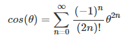
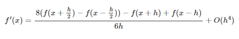
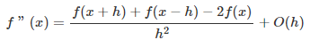

Algorithme numérique - Labo 4
Auteurs:
- Romain Capocasale
- Vincent Moulin
- Loïc Jurasz
Date de création : 27.03.2019
Classe : dlm-A
Équipe numéro : 3
(y = cos(x))
(y = cos'(x))
(y = cos''(x))
Bonus
Nous n'avons pas eu le temps de réaliser graphiquement le bonus. Cepandant nous avons tout de même chercher a résoudre le problème. Le meilleure angle pour mimiser le temps est un angle de 90°. Nous avons réalisé nos calcule avec les valeurs suivante :
- vitesse dans l'eau : 2m/s
- vitesse sur terre : 4m/s
- diametre du lac : 200m
Avec ces différentes valeurs et un angle de 90 degré, c'est la que nous avons obtenu le meilleur temps. Le temps était d'environ 78,5 seconde. On peut alors en deduire que le bateau a meilleur temps de se faire remorquer du debut à la fin sans passer par le lac.
Contextualisation
Le but de ce laboratoire est de représenter la fonction cosinus aisni que sa 1ere et seconde derivées sur un graphe. Pour réaliser cela nous n'avons pas le droit d'utiliser les fonction trigonometrique.
Nous devons utiliser les aproximations de ces fonctions. Pour le cosinus nous utilisons la série de taylor et pour les dérivé la derivation numérique.
Métodologie et développement
Pour le dessin du graphe, nous avons utilisé la librairie suivante : https://github.com/mauriciopoppe/function-plot.
- Pour la fonction cosinus nous avons utiliser l'approximation suivante : 
- Pour sa 1ere derivée nous avons utilisé cette formule : 
- Et pour la seconde derivée nous avons utilisé cette formule : 
Pour la 1ere derivée, nous avons une erreur qui est en O(h4) ce qui est plutot pas mal. Par contre pour la seconde dérivée, on peut remarquer que l'approximation est plutot mauvaise vu son erreur en O(h).
Nous avons tout de même utilisé cette formule étant donné que c'est la formule présenté dans le cours et que nous avions bien compris la démonstration de celle ci. De plus, on peut voir que sur le graphique que entre -5 et 5, la dérivé est correctement représenté.
Pour ce qui est du code voici les différentes fonctions que nous avons utilisés :
- cosTaylorApproximate(theta, iteration=50) : Permet de calculer la serie de taylor de la fonction cosinus pour un theta donnée. On peut également précisé le nombre d'itération voulu. Pour calculer le denominateur, nous utilisons la fonction factor(n) qui permet de calculer le factoriel d'un nombre.
- firstDerivate(theta, n=200, h=0.001) : Permet d'approximer, la 1ere derivée en un point donnée. le parametre n représente le nombre d'iteration et h le delta des derivées
- secondDerivate(theta, n=200, h=0.001) : La meme chose mais pour la seconde derivée.
- generateTabPoints(func, xmin=-5, xmax=5) : Permet de générer le tableau de point de la fonction entre xmin et xmax dans le but d'etre dessiné ultérieurement. La fonction prends en parametre le callback d'une fontion.
- generateChart(tabPoints) : Permet de générer le graphe avec la librairie selon le tableau de point passé en parametre.
Dans la fonction principale (window.onload), on s'occupe simplement de générer le tableau de point pour chacune des fonctions puis on effctue l'affichage.
Conclusion
Nous arrivons a dessiner correctement les différentes fonctions qui nous était demandé. L'erreur sur les différentes approximation est plutot bonne sauf pour la 2eme derivée. Il aurait été intérensant de pouvoir faire rentrer les différents parametre comme n et h a l'utilisateur pour plus d'interaction et pour mieux se rendre compte des approximation effectuées.
Source
- Cours de M.Gobron
- https://stackoverflow.com/questions/39388107/javascript-sin-cosin-taylor-expansion
- https://stackoverflow.com/questions/27234243/recursive-algorithm-for-cos-taylor-series-expansion-c
- https://mauriciopoppe.github.io/function-plot/